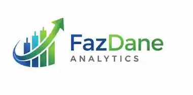

Week of Nov 16–20, 2026 · S&P 500 · Nasdaq · Russell 2000 · VIX Complex · Breadth Chart Set
The AI trade broke. The S&P 500 fell 8.6% to 6,910.39 on seven straight losing sessions, its worst week since April 2025, and closed in correction territory along with the Dow (−8.0%). The Nasdaq lost 10.0%, its worst week since March 2020, and is now negative for 2026. Friday alone took the S&P down 3.7% and the Nasdaq 5.3% as semiconductors fell 10.7% and Nvidia 14% on a reported SEC look at its accounting — despite beating earnings on Tuesday. Only 122 of 503 S&P stocks rose on Friday.
Everything sold at once: gold fell 8.9%, Bitcoin 7.9% and oil 5.6%, while VIX jumped 86% to 35.89, its highest close of the year. The Fed minutes read hawkish, with a December hike now priced near 90%, yet the 10-year yield fell to 4.92% as money ran for safety. Breadth collapsed across every gauge — the composite of 14 indicators fell from the 41st to the 19th percentile, regime "very weak" — but two contrarian signals lit up: equity put/call above 1.0 and extreme fear. This is a washout. It is not yet a reversal.
This week's StockCharts screenshots were not attached, so no chart images are shown. Where the same indicator is available from reachable data (thetrading.tools, the watchlist or weekly recaps) the reading is filled in and marked with its source; the rest are left blank rather than estimated.
| Chart | Reading | Signal | Note |
|---|---|---|---|
| $NYSI daily | Summation −351 (16th pctile), Oscillator −87 (1st pctile) — via thetrading.tools | Bearish | Below zero and falling; oscillator at a 5-year extreme low |
| $NYSI weekly | Not provided this week — attach the StockCharts screenshot to include it | ||
| $VIX daily | 35.89 close, +86% on the week | Bearish | Highest close of 2026; far above 20; watch for a close back inside its bands |
| $NYHL daily | 10-day NH−NL −7.4% (5th pctile) — via thetrading.tools | Bearish | New lows dominate; NYSE A-D line 10,728 net issues below its high |
| $BPSPX P&F | Not provided this week — attach the StockCharts screenshot to include it | ||
| $CPCE daily | 1.02 (watchlist) | Bullish | First reading above 1.0 in our series — contrarian fear spike |
| $SPX P&F | Not provided this week — attach the StockCharts screenshot to include it | ||
| $NDX P&F | Not provided this week — attach the StockCharts screenshot to include it | ||
| $BPNDX P&F | Not provided this week — attach the StockCharts screenshot to include it | ||
| $BPNYA P&F | Broad bullish percent 24.4% (5th pctile) — all-US proxy via thetrading.tools | Bearish | Below 30 = oversold; a reversal up from here would be a bull alert |
| $NYA long-term | Not provided this week — attach the StockCharts screenshot to include it | ||
| Sector CandleGlance | Weekly: XLK −12.5%, XLC −8.0%, XLB −7.5% … XLP −2.1% best — via recaps | Bearish | Every sector fell; staples the only Friday gainer |
| $NDX / $SPX / IWM / $VIX | Nasdaq −10.0%, S&P −8.6%, RUT −7.5%, VIX +86% — via recaps | Bearish | Small caps fell less than tech for once; VIX at a 2026 high |
| CNN Fear & Greed | Extreme Fear (exact value not available) | Bullish | Contrarian: extreme fear has preceded rebounds, not timed them |
| Signal | Reading | Score |
|---|---|---|
| $NYSI daily (summation + oscillator) | Below 0 and falling | -1 |
| $NYSI weekly | Not provided | — |
| $NYHL / new highs − new lows | −7.4%, worsening | -1 |
| $BPSPX | Not provided | — |
| $BPNYA (all-US bullish % proxy) | 24.4%, below 50 | -1 |
| $BPNDX | Not provided | — |
| $SPX P&F signal | Not provided | — |
| % above 50-day | 22.9% (below 30%) | -1 |
| VIX / VIX3M | Backwardation, 1.13 | -1 |
| $CPCE + Fear & Greed | 1.02 + Extreme Fear (contrarian) | +1 |
| Total (6 of 10 scored) | Regime: Washout | -4 |
Five of the six signals we could score are bearish; the only positive is the contrarian fear reading. A total of −4 places the market in the Washout regime (−4 or lower), matching thetrading.tools' "very weak" label.
| Gauge | Oct 15 | Oct 23 | Oct 30 | Nov 6 | Nov 13 | Nov 20 |
|---|---|---|---|---|---|---|
| % > 50-day | 26.7% | 33.4% | 37.6% | 39.0% | 41.4% | 22.9% |
| % > 200-day | 37.5% | 38.2% | 39.0% | 37.5% | 39.2% | 27.8% |
| Composite (pctile) | — | — | 33 | 51 | 41 | 19 |
| /NQ (Dec) | — | 29,175 | 28,543 | 27,108 | 27,927 | 25,291 |
| /ES (Dec) | — | 7,673 | 7,615 | 7,404 | 7,561 | 6,967 |
| /RTY (Dec) | — | — | 2,822 | 2,761 | 2,791 | 2,600 |
| VIX | 16.46 | 19.45 | 19.42 | 25.64 | 19.30 | 35.89 |
| VIX1D | 13.90 | 16.81 | 19.33 | 28.73 | 18.63 | 51.34 |
| VVIX | 92.57 | 109.70 | 106.43 | 121.94 | 101.53 | 138.03 |
| SKEW | 160.45 | 151.80 | 149.76 | 153.55 | 147.14 | 138.84 |
| Equity P/C ($CPCE) | 0.67 | 0.80 | 0.83 | 0.71 | 0.76 | 1.02 |
| Index P/C ($CPCI) | 0.99 | 1.10 | 1.03 | 1.25 | 0.94 | 1.30 |
| Transports ($DJT) | 20,107 | 20,042 | 20,329 | 19,775 | 20,594 | 19,625 |
| Gauge | Reading | What It Says | Tone |
|---|---|---|---|
| VIX | 35.89 | Up 86% on the week to the highest close of 2026; 93rd percentile over 16 years even before Friday's jump. | Panic |
| VIX1D | 51.34 | One-day volatility 15 points above VIX: options price another violent session immediately. | Extreme |
| VIX / VIX3M | ≈1.13 | Backwardation since Nov 17 (thetrading.tools' provisional peak 1.18). SPY fell 6.8% during the episode so far. | Capitulation zone |
| VVIX | 138.03 | New high in our series; demand for VIX calls is intense. | Extreme |
| SKEW | 138.84 | Lowest in the series: at-the-money volatility has risen so much that far out-of-the-money puts are relatively cheap. | Tails cheap |
| Put/call | 1.16 / 1.02 / 1.30 | Total, equity and index put/call all above 1.0. Equity put/call above 1.0 is a classic contrarian fear reading. | Contrarian + |
Historically, VIX/VIX3M inversions have been better entries than exits: SPY's median return afterward was +0.75% over one week, +2.54% over one month and +5.11% over three months, positive 74% of the time at one and three months. The Nov 5–6 inversion produced exactly that kind of one-week bounce — and then this week erased it. Inversions mark zones of maximum fear, not precise lows; the confirmation is the curve returning to contango.
| Driver | Detail | Tone |
|---|---|---|
| Nvidia | Beat on Tuesday (revenue $115.8B vs $109.1B expected; guidance ~$130B vs $125.1B), then fell 3.3% Thursday and 14% Friday on a Reuters report that the SEC is examining its accounting. Down about 23% on the week after Jensen Huang's resignation; interim CEO Colette Kress. | Bearish |
| Anthropic IPO | Record debut Thursday; the pop faded Friday (about −8.5%, near $89 vs an $83 offer price), prompting profit-taking across AI hardware. | Mixed |
| Fed | October minutes read hawkish; a 25 bp December 9 hike priced near 90%. | Hawkish |
| Rates & dollar | 10-year fell from 5.15% to 4.92% as money moved to safety; DXY 103.84, near its highest since April 2025. | Flight to safety |
| Calendar | Thanksgiving: markets closed Thursday Nov 26, shortened session Friday Nov 27. Thin holiday liquidity can exaggerate moves either way. | Watch |
| Scenario | Trigger | What It Implies | Bias |
|---|---|---|---|
| Capitulation low | VIX/VIX3M back below 1.0; a day with 80%+ of stocks advancing | Washout complete; oversold breadth gives room for a sharp holiday-week rally. Reclaiming 7,176 (Thursday's close) is the first test. | Bullish |
| Basing | VIX 28–38; breadth stops falling | Volatile range near the lows while the AI story and the Fed path settle. | Neutral |
| Crash extension | VIX > 40; VIX1D stays > VIX; S&P below 6,910 | Forced selling continues; another leg lower before any durable low. | Bearish |
S&P −8.6% (correction), Nasdaq −10% (worst since March 2020). Breadth composite at the 19th percentile; scorecard −4.
50-day breadth fell from 41.4% to 22.9% in one week; 200-day breadth broke to 27.8%. The long-term regime is now damaged.
VIX 35.89, VIX1D 51.34, VVIX 138 and the curve inverted again. Expect very large daily ranges into a thin holiday week.
Equity put/call 1.02, extreme fear, and a deep VIX/VIX3M inversion — historically zones of opportunity over 1–3 months.
VIX/VIX3M back under 1.0, VIX1D back below VIX, a breadth-thrust day (80%+ advancers), and $NYSI turning up.
Don't chase or panic-sell; keep risk defined and small. Scale into equal-weight and breadth leaders only once the curve normalizes.
Data: breadth composite, McClellan, NH-NL, bullish percent, 50/200-day readings and equal-weight stats from thetrading.tools (Nov 20 close); VIX term structure and inversion statistics from thetrading.tools; index closes, weekly and sector returns, yields, gold, oil and Bitcoin from The Closing Print; day-by-day tape, Nvidia results and Fed odds from AC360; Nvidia leadership, Anthropic IPO and Nasdaq-100 drawdown count from Alain Guillot; futures, VIX1D, VVIX, SKEW, put/call ratios, $DJT and $DXY from FazDane's ThinkorSwim watchlist. StockCharts chart set not provided this week.
DISCLAIMER: This analysis is produced by FazDane Analytics for informational and educational purposes only. It does not constitute financial advice, an offer to buy or sell securities, or a solicitation. Futures and options trading involve substantial risk of loss. Past performance is not indicative of future results. Always conduct your own due diligence and consult a licensed financial professional before making investment decisions.